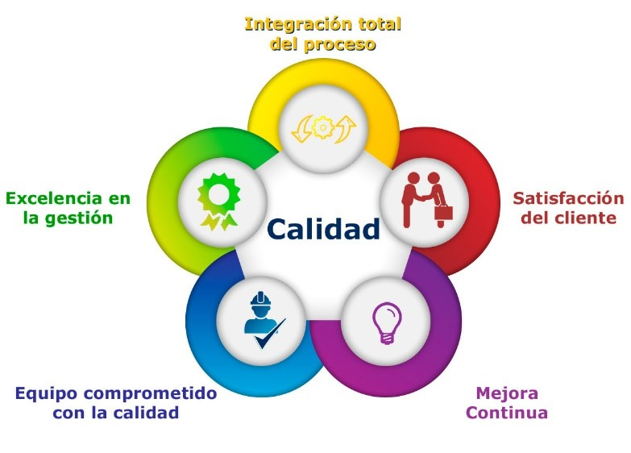

¿Qué es la Calidad de datos? Concepto y beneficios
Podemos tener a disposición una gran cantidad de datos, pero si la calidad de esta información es deficiente, los beneficios que podríamos obtener son: drásticamente bajos.
La calidad de datos es un concepto que viene a erradicar la información de poco calibre. Se realiza mediante un procesado, filtrado y mejora de todos los datos que están bajo la propiedad de una organización, haciendo que el valor intrínseco de esta información sea realmente valioso.
Definición de calidad de datos
La calidad de datos son los procesos, metodologías y algoritmos para aumentar el estado cualitativo de los datos que existen en una entidad empresarial u organización de cualquier índole.
Se considera que los datos son de calidad cuando estos cumplen con una serie de requisitos previamente estimados para aprovechar su utilización en los diferentes aspectos empresariales.
Poseer datos de calidad no es fácil, y es uno de los mayores inconvenientes que enfrenta una organización a la hora de procesar la información que dispone para mejorar las decisiones empresariales.
Los datos comprenden uno de los activos más importantes de una empresa, pero es aún más trascendental cuando estos son de calidad.
¡Acuerdate de seguirnos en nuestras redes sociales!
Dentro de una organización, la calidad de los datos es esencial para la consistencia del reporting, la confianza de los usuarios y para la eficacia de los procesos operativos y transaccionales.
La inteligencia empresarial necesita basarse en datos de alta calidad y, para asegurar que éstos se hallan al nivel deseado, hay que cuidar que cada interacción con los datos lo propicia, desde la forma en que se introducen, a cómo se almacenan y gestionan.
Mantener la exactitud y la integridad de todos los tipos de datos en toda la organización es trabajar por su aptitud para cumplir con su propósito en un contexto dado, implica garantizar que cada dato reúne todos los atributos necesarios:
» Exactitud
» Integridad
» Actualización
» Relevancia
» Coherencia
» Confiabilidad
» Presentación apropiada
» Accesibilidad
Niveles de calidad de datos:
⇨ Mala calidad de datos:
Los datos de mala calidad son aquellos que tienen poca utilidad para utilizarse en cualquier proceso empresarial. Se caracterizan por no ser fiables en los resultados que presenta, ya que carece de tratamientos, filtrados y mejoras para su aprovechamiento. Las consecuencias de confiar en datos de baja calidad pueden ser dramáticas, como tomar una decisión financiera corporativa incorrecta o provocar el fracaso de un proyecto.
⇨ Alta calidad de datos:
Son aquellos que cumplen con todos los estándares de calidad y que, por tanto, son utilizables para los diversos aspectos organizacionales. Permite que las tomas de decisiones sean fiables, reduciendo en gran medida los riesgos corporativos.
¿De qué sirve realizar análisis y llegar a conclusiones para apoyar la toma de decisiones si la calidad de datos es deficiente? Una mala calidad de datos puede provocar decisiones erróneas que te pueden llevar a tener dificultades.
¿Cómo podemos medir la calidad de datos?
Llevar a cabo una gestión de la calidad de datos adecuada depende de saber cómo medirla. El establecimiento de indicadores y la recogida de métricas permiten ganar en comprensión acerca de cada componente del ciclo de calidad de datos porque, aunque cada organización es única, existen una serie de medidas cuantitativas del data quality que son universales:
- Completitud: es el grado en el que todos los atributos del dato están presentes.
- Validez: representa el ajuste de un valor de datos a su conjunto de valores de.
- Unicidad: la medida en que todos los valores distintos de un elemento de datos aparecen sólo una vez.
- Integridad: tiene que ver con el grado de conformidad con las reglas de relación de datos definidas.
- Precisión: determina en qué medida los datos representan correctamente la verdad sobre un objeto del mundo real o se ajustan a lo establecido por una fuente autorizada.
- Coherencia: representa el grado en que una pieza única de datos contiene el mismo valor a través de múltiples conjuntos de datos.
- Oportunidad: este atributo de la calidad de datos permite conocer si éstos están disponibles cuando se requiere.
- Representación: tiene que ver con el formato, patrón, legibilidad y utilidad de los datos para su uso previsto.
Además de estas medidas cuantitativas de calidad de datos, para adquirir una perspectiva real de la situación de la organización en este área, también deben considerarse las medidas cualitativas, como las que tienen que ver con la satisfacción de los clientes y usuarios de negocio, los índices de cumplimiento, la aparición de redundancias en los procesos o la identificación de oportunidades de negocio.

«Garantizar la calidad de los datos no siempre es una tarea fácil, pero el tiempo y el esfuerzo que inviertes en ellos se amortizan en el éxito a largo plazo de tu empresa...»
Data Quality Management
La gestión de la calidad de los datos (Data Quality Management) es una forma de administración que abarca desde la definición y designación de roles hasta el despliegue de funciones, de la definición de políticas y responsabilidades al establecimiento de procedimientos para la adquisición, mantenimiento, disposición y distribución de datos.
Un enfoque eficaz de la gestión de la calidad de los datos comprende tanto elementos reactivos, que incluyen la gestión de problemas en los datos situados en bases de datos existentes; como elementos proactivos, que son los que tiene que ver con:
» Establecimiento de la gobernanza.
» Identificación de las funciones y responsabilidades.
» Creación de las expectativas de calidad, así como de las estrategias empresariales de apoyo.
» Implementación de una plataforma técnica que facilite estas prácticas empresariales.
Por eso, para que una iniciativa de gestión de la calidad de los datos tenga éxito, debe garantizarse la cooperación entre las áreas de IT y negocio. Esta asociación es importante porque, si bien los perfiles técnicos se encargarán de la construcción y el control del entorno, los usuarios de negocio serán los propietarios de los datos y, a partir de la aceptación ese rol, asumirán una responsabilidad con la organización y sus activos informacionales.
Así, desde IT se llevarán a cabo todas las acciones necesarias para adquirir, mantener, difundir y poner a disposición de quien corresponda los activos de datos electrónicos de una organización, trabajando para ello en:
» Arquitectura.
» Sistemas.
» Establecimientos Técnicos.
» Base de datos.